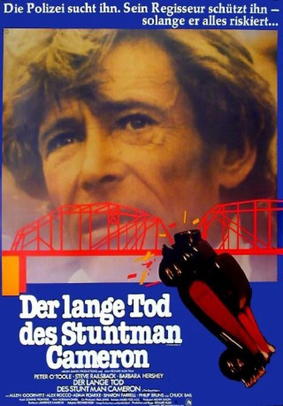
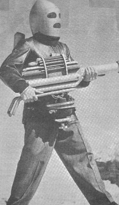
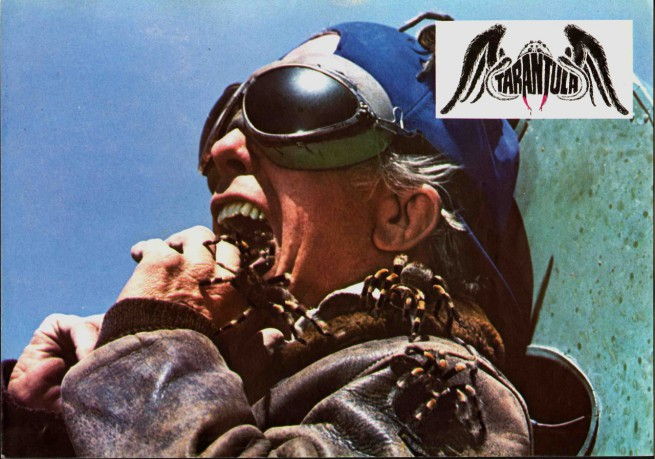
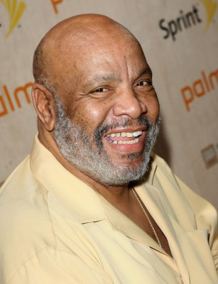

#6971 Der Lange Tod des Stuntman Cameron
Alternativ: The Stunt Man
Auszeichnungen: für 3 Oscars nominiert 1 GoldenGlobes gewonnen
 
 IMDB-Wertung: 7.2 / 10
IMDB-Wertung: 7.2 / 10  Metascore: 0
Metascore: 0 
Der junge Vietnamveteran Cameron stolpert auf der Flucht vor der Polizei mitten in ein Set, an dem der exzentrische Regisseur Eli Cross gerade einen Kriegsfilm dreht. Dabei versursacht er versehentlich den Tod eines Stuntmans, woraufhin ihm Cross einen kuriosen Deal vorschlägt: Wenn Cameron für den verunglückten Stuntman einspringt, versteckt er den Gesuchten vor der Polizei. Der verzweifelte Cameron willigt ein und findet zunächst sogar Gefallen an seiner neuen Aufgabe, nicht zuletzt da er sich auch in die attraktive Hauptdarstellerin Nina verguckt. Doch schon bald bekommt er das Gefühl, dass Cross alles tut, um einen möglichst authentischen Film zu produzieren. Während Cameron für den manipulativen Filmemacher zunehmend gefährlichere Stunts vollführen soll, fällt es ihm immer schwerer, Wirklichkeit und Filmrealität auseinander zu halten.
Jahr: 1980
Dauer: 130 Minuten
FSK: 16
Land: USA Studio: 20th Century FoxTonspuren: DD2.0 - ,
Untertitel:
Auflösung: 1080p (1920x1048) Größe: 8355 MB
Genre: Action, Thriller, Drama, Komödie, Liebe
Regisseur: Richard Rush
Drehbuch: Lawrence B. Marcus
Soundtrack:
Darsteller:
 Peter O'Toole als Eli Cross
Peter O'Toole als Eli Cross Steve Railsback als Cameron
Steve Railsback als Cameron Barbara Hershey als Nina Franklin
Barbara Hershey als Nina Franklin Allen Garfield als Sam
Allen Garfield als Sam Alex Rocco als Jake
Alex Rocco als Jake- Sharon Farrell als Denise
- Adam Roarke als Raymond Bailey
 Philip Bruns als Ace
Philip Bruns als Ace- John Garwood als Gabe / Eli's cameraman
-  George Wallace als Father
-  Whitey Hughes als Eli's A.D.
- Walter Robles als Eli's A.D.
- Stafford Morgan als Thompson F.B.I.
- John Alderman als Carlbinerri
- Nelson Tyler als Eli's Crane Cameraman
-  James Avery als Man Playing Pinball , uncredited
 Gregg Berger als (uncredited
Gregg Berger als (uncredited- Patricia McPherson als Pretty Woman , uncredited
- Charles Bail als Chuck Barton
- Jim Hess als Henry / Eli's camera assistant
- John Pearce als Garage Guard
- Michael Railsback als Burt
- Dee Carroll als Mother
- Leslie Winograde als Sister
- Don Kennedy als Lineman
- A.J. Bakunas als Eli's Script Clerk
- Roberto Caruso als 1st Cop
- Frank Avila als 2nd Cop
- Jack Palinkas als Technician
- James Garrett als 2nd Technician
- Garrett McPherson als Tourist
- Louis Gartner als 1st Brothel Man
- William Joseph Arno als (uncredited
- Frank Beetson als (uncredited
- Chance Boyer als Kid in Cemetery , uncredited
- Deanna Dae Coleman als Stunt Crew , uncredited
- Larry Dunn als Stunt Crew , uncredited
- Don Hayden als WWI German Soldier , uncredited
- Ross Reynolds als Helicopter Pilot , uncredited
- Gordon Ross als (uncredited
- Marion Wayne als (uncredited
Datei: X:\1980\Lange Tod des Stuntman Cameron, Der (1980, FSK16, 1920x1048).mkv seit 15.09.2017
Festplatte: HD 1980-1986
 Es gibt insgesamt 33 Filme in der Gruppe '1980'
Es gibt insgesamt 33 Filme in der Gruppe '1980'